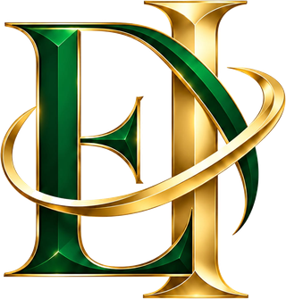
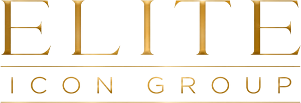
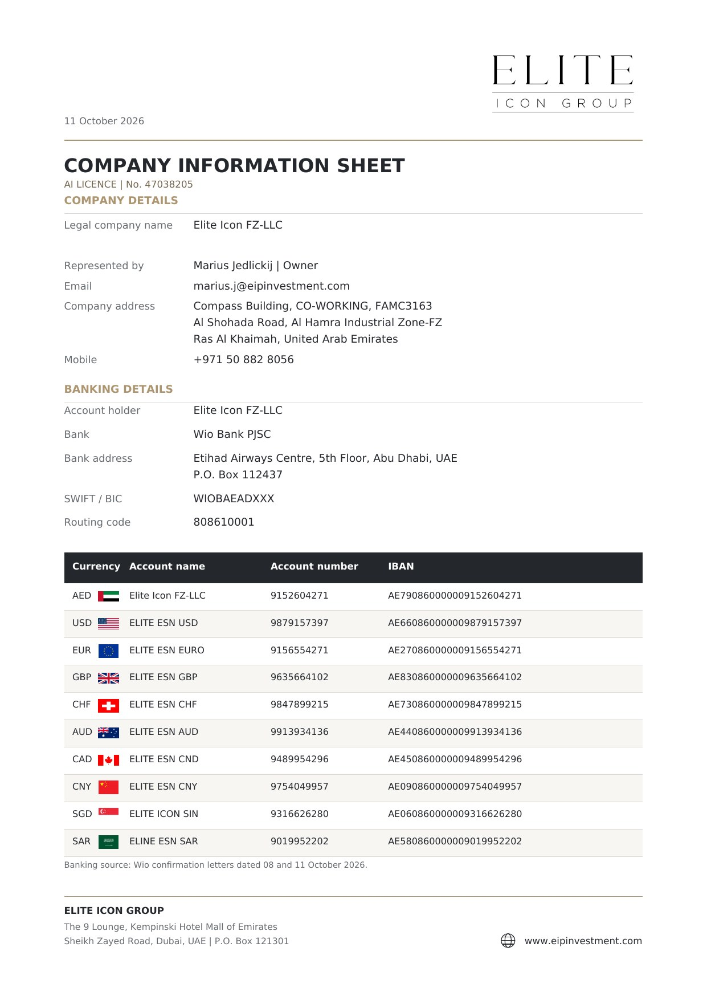
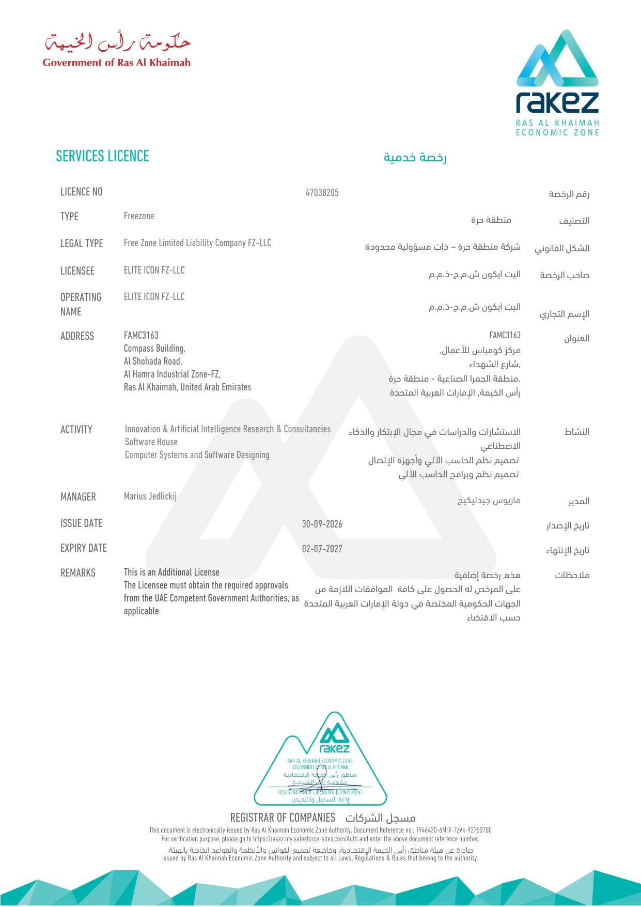
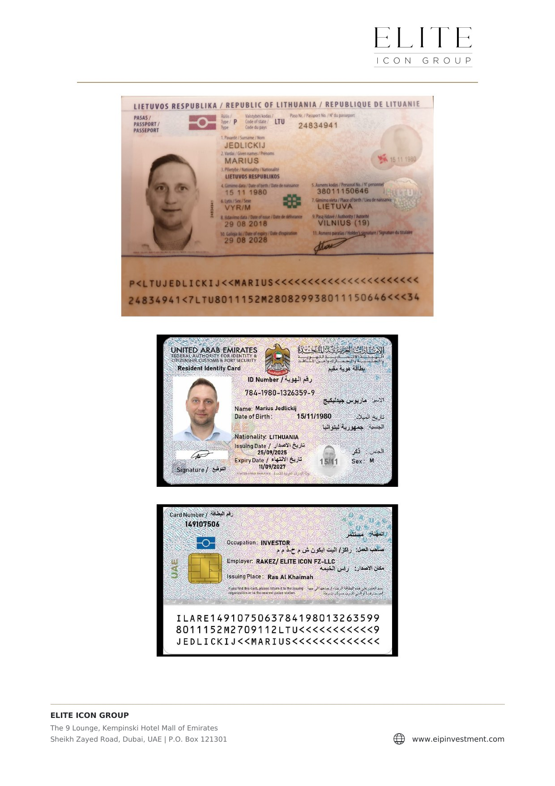

Istituto per le Opere di Religione

Elite Icon Group · Dubai · UAE

CinzelForumCormorant Garamond


Elite Group of Companies
The 9 Lounge, Kempinski Hotel Mall of Emirates
Sheikh Zayed Road, Dubai, UAE, P.O. Box 121301